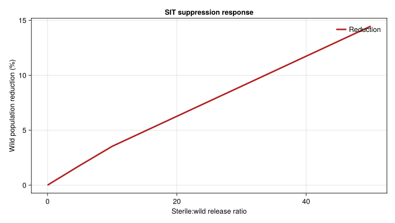
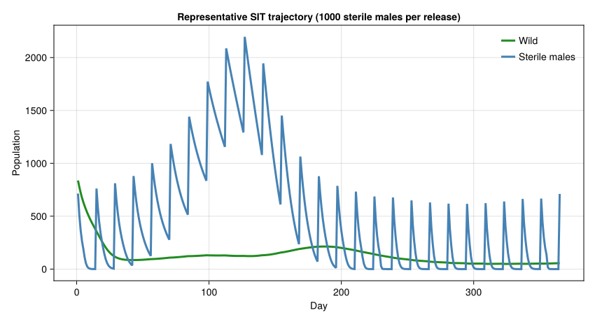

Screwworm SIT Eradication
Simon Frost
- Background
- Screwworm Biology
- Temperature-Dependent Mortality
- Cumulative Cold Index
- The Sterile Insect Technique
- Population Dynamics with SIT (Coupled API)
- Myiasis Prediction Model
- Historical Eradication Timeline
- The Critical Period: 1976–1982
- Sterile Male Competitiveness
- Climate Warming Projections
- Key Insights
Primary reference: (Gutierrez et al. 2019).
Background
The New World screwworm (Cochliomyia hominivorax) was one of the most devastating livestock pests in the Americas. Females lay eggs in open wounds of warm-blooded animals; larvae feed on living tissue, causing myiasis that is often fatal. The pest was eradicated from North America using the Sterile Insect Technique (SIT) — mass release of irradiation-sterilized males to suppress wild populations through reproductive interference.
This is a genetic control method: because female screwworms mate only once (monandry), a female that mates with a sterile male produces no offspring. When sterile males vastly outnumber wild males, the effective reproduction rate drops below replacement and the population collapses.
Reference: Gutierrez, A.P., Ponti, L., and Arias, P.A. (2019). Deconstructing the eradication of new world screwworm in North America: retrospective analysis and climate warming effects. Medical and Veterinary Entomology 33:282–295.
Screwworm Biology
using PhysiologicallyBasedDemographicModels
using CairoMakie
# --- Temperature thresholds ---
const SW_T_LOWER = 14.5 # °C lower developmental threshold
const SW_T_UPPER = 43.5 # °C upper developmental threshold
const SW_T_REF = 27.2 # °C reference (optimal) temperature
# Development rate
sw_dev = LinearDevelopmentRate(SW_T_LOWER, SW_T_UPPER)
# --- Life history parameters ---
const FEMALE_HALF_LIFE = 3.7 # days (mated, field; Thomas & Chen 1990)
const MAX_FECUNDITY = 67.0 # eggs/female/day
const SEX_RATIO = 0.5 # 1:1 sex ratio
const DOUBLING_TIME = 14.0 # days (potential, ideal conditions)
const FIELD_DOUBLING = 54.0 # days (observed, tropical endemic)
println("Screwworm life history:")
println(" Temperature range: $(SW_T_LOWER)–$(SW_T_UPPER)°C")
println(" Optimal temperature: $(SW_T_REF)°C")
println(" Female half-life: $(FEMALE_HALF_LIFE) days")
println(" Max fecundity: $(MAX_FECUNDITY) eggs/female/day")
println(" Potential doubling time: $(DOUBLING_TIME) days")Screwworm life history:
Temperature range: 14.5–43.5°C
Optimal temperature: 27.2°C
Female half-life: 3.7 days
Max fecundity: 67.0 eggs/female/day
Potential doubling time: 14.0 daysTemperature-Dependent Mortality
The daily adult mortality rate follows a quadratic function centered on the optimal temperature. Cold winters drive cumulative mortality that determines whether an area can sustain endemic populations.
# Daily mortality rate (Eq. 1 of Gutierrez et al. 2019)
# µ_ab(T) = 0.00036(T - 27.2)² + 0.0035
# r² = 0.74, d.f. = 16
function daily_mortality(T::Float64)
return clamp(0.00036 * (T - SW_T_REF)^2 + 0.0035, 0.0, 1.0)
end
println("\nDaily adult mortality at different temperatures:")
println("T (°C) | Mortality/day | Daily survival | Annual survival")
println("-"^65)
for T in [5.0, 10.0, 15.0, 20.0, 27.2, 30.0, 35.0, 40.0]
mu = daily_mortality(T)
surv_daily = 1 - mu
surv_annual = surv_daily^365
println(" $(rpad(T, 5)) | $(round(mu, digits=5)) | " *
"$(round(surv_daily, digits=4)) | $(round(surv_annual, digits=6))")
endDaily adult mortality at different temperatures:
T (°C) | Mortality/day | Daily survival | Annual survival
-----------------------------------------------------------------
5.0 | 0.18092 | 0.8191 | 0.0
10.0 | 0.11 | 0.89 | 0.0
15.0 | 0.05708 | 0.9429 | 0.0
20.0 | 0.02216 | 0.9778 | 0.00028
27.2 | 0.0035 | 0.9965 | 0.278109
30.0 | 0.00632 | 0.9937 | 0.098766
35.0 | 0.0254 | 0.9746 | 8.3e-5
40.0 | 0.06248 | 0.9375 | 0.0Cumulative Cold Index
The cumulative cold mortality index (µcold) determines whether a location can sustain year-round populations. Areas with µcold ≤ 10 are considered endemic zones.
# Cumulative cold mortality (Eq. 2)
# µ_cold(y) = Σ µ_ab(T) for T < 27.2°C (Sept 1 – May 31)
function cumulative_cold(daily_temps::Vector{Float64}; start_day=244, end_day=151)
mu_cold = 0.0
for (i, T) in enumerate(daily_temps)
doy = ((i - 1 + start_day - 1) % 365) + 1
# Only count Sept 1 (244) through May 31 (151 next year)
if doy >= start_day || doy <= end_day
if T < SW_T_REF
mu_cold += daily_mortality(T)
end
end
end
return mu_cold
end
# Compare locations along the eradication transect
println("\nCumulative cold index by location (approximate):")
locations = [
("Uvalde, TX", 28.0, 10.0), # Cold winters
("McAllen, TX", 26.0, 13.0), # Transition zone
("Tampico, Mexico", 22.0, 16.0), # Tropical with cool winters
("Tuxtla-Gutiérrez", 16.7, 20.0), # Tropical, mild winters
]
for (name, lat, mean_T) in locations
# Generate approximate annual temperatures
amplitude = 12.0 - 0.15 * (30 - lat) # Higher lat = more seasonal
temps = [mean_T + amplitude * sin(2π * (d - 200) / 365) for d in 1:365]
mu_cold = cumulative_cold(temps)
status = mu_cold > 10 ? "non-endemic" : "ENDEMIC"
println(" $(rpad(name, 22)) µ_cold = $(round(mu_cold, digits=1)) → $status")
endCumulative cold index by location (approximate):
Uvalde, TX µ_cold = 46.5 → non-endemic
McAllen, TX µ_cold = 34.9 → non-endemic
Tampico, Mexico µ_cold = 24.7 → non-endemic
Tuxtla-Gutiérrez µ_cold = 14.1 → non-endemicThe Sterile Insect Technique
SIT exploits female monandry: a female that mates with a sterile male has no viable offspring. The key parameter is the overflooding ratio — sterile males released per wild male.
# --- SIT parameters ---
const MATING_RATE = 0.5 # Proportion of virgin females mating per day
const H_SITES = 100.0 # Relative wound-site density
const SW_WOUND_SEARCH = FraserGilbertResponse(0.12)
const SW_ALLEE_HALF_SAT = 8.0
const SW_EMERGENCE_RATE = 0.035
# Reproduction equation (Eq. 4 of Gutierrez et al.)
# ΔE = φ_T × φ_search × sr × R × (W_m + 0.5 × W_u)
# With SIT (Eq. 4i):
# ΔE = φ_T × φ_search × R × (W_m + 0.5 × φ_comp × φ_release × W_u)
function available_wound_sites(day, phi_T, n_days)
seasonal = 0.5 + 0.5 * sin(2π * (day - 120) / max(n_days, 1))
return H_SITES * (0.4 + 0.6 * phi_T * seasonal)
end
mate_finding_success(wild_males) = wild_males / (wild_males + SW_ALLEE_HALF_SAT)
"""
Effective reproduction rate under SIT.
- wild_males: number of wild males
- sterile_males: number of released sterile males
- wild_females_unmated: unmated wild females
- competitiveness: mating competitiveness of sterile males (0-1)
Returns: fraction of matings that are fertile
"""
function sit_fertile_fraction(wild_males, sterile_males;
competitiveness=1.0)
effective_sterile = sterile_males * competitiveness
total = wild_males + effective_sterile
total ≈ 0.0 && return 1.0
return wild_males / total
end
# Demonstrate overflooding effects
println("\nSIT overflooding ratio effects:")
println("Ratio (S:W) | Fertile matings | Population growth")
println("-"^55)
for ratio in [0, 1, 2, 5, 10, 20, 50, 100]
fertile = sit_fertile_fraction(100, 100 * ratio)
# Net growth: R₀ with SIT = R₀_base × fertile fraction
R0_base = 3.0 # Approximate net reproductive rate
R0_sit = R0_base * fertile
status = R0_sit < 1.0 ? "DECLINING" : "growing"
println(" $(rpad("$ratio:1", 10)) | $(round(fertile*100, digits=1))% | " *
"R₀=$(round(R0_sit, digits=2)) ($status)")
endSIT overflooding ratio effects:
Ratio (S:W) | Fertile matings | Population growth
-------------------------------------------------------
0:1 | 100.0% | R₀=3.0 (growing)
1:1 | 50.0% | R₀=1.5 (growing)
2:1 | 33.3% | R₀=1.0 (growing)
5:1 | 16.7% | R₀=0.5 (DECLINING)
10:1 | 9.1% | R₀=0.27 (DECLINING)
20:1 | 4.8% | R₀=0.14 (DECLINING)
50:1 | 2.0% | R₀=0.06 (DECLINING)
100:1 | 1.0% | R₀=0.03 (DECLINING)Population Dynamics with SIT (Coupled API)
The simulation uses the package’s PopulationSystem with MultiTypePBDM to model the SIT system as a coupled set of distributed-delay populations with explicit rules and events — no hand-rolled loop required.
Building the Population System
The wild screwworm lifecycle is represented by a single Population with three life stages (egg, larva/pupa, adult), each driven by temperature-dependent development via the distributed delay. Sterile males occupy a separate single-stage Population with high daily mortality (radiation damage + field losses).
# --- Life stage parameters ---
# Screwworm immature development at ~27°C reference:
# Egg: ~24 h → ~15 DD above 14.5°C threshold
# Larva: ~5 d → ~63 DD
# Pupa: ~7 d → ~88 DD
# Adult lifespan: ~21 d → ~265 DD
# (Estimates from Thomas & Mangan 1989; Gutierrez et al. 2019)
const EGG_DD = 15.0 # Degree-days for egg stage
const LARVA_DD = 63.0 # Degree-days for larva/pupa combined
const ADULT_DD = 265.0 # Degree-days for adult lifespan
# k substages for distributed delay (higher = sharper distribution)
const K_IMM = 10
const K_ADULT = 8
# Sterile male lifespan (shorter; radiation + field stress)
const STERILE_ADULT_DD = 150.0
const STERILE_MU = 0.02 # Extra daily mortality for irradiated males
"""
Build a screwworm coupled population system.
# Arguments
- `initial_wild`: initial wild adult population
- `n_days`: number of simulation days (used for seasonal wound availability)
"""
function build_screwworm_system(; initial_wild=100.0)
# Wild screwworm: egg → larva/pupa → adult
wild = Population(:wild, [
LifeStage(:egg, DistributedDelay(K_IMM, EGG_DD; W0=initial_wild * 0.3), sw_dev, 0.01),
LifeStage(:larva_pupa, DistributedDelay(K_IMM, LARVA_DD; W0=initial_wild * 0.3), sw_dev, 0.005),
LifeStage(:adult, DistributedDelay(K_ADULT, ADULT_DD; W0=initial_wild * 0.4), sw_dev, 0.003),
])
# Sterile males: single stage with high mortality
sterile = Population(:sterile_male, [
LifeStage(:adult, DistributedDelay(6, STERILE_ADULT_DD; W0=0.0), sw_dev, STERILE_MU),
])
return PopulationSystem(
:wild => PopulationComponent(wild; species=:screwworm, type=:wild),
:sterile => PopulationComponent(sterile; species=:screwworm, type=:sterile),
)
end
sys_test = build_screwworm_system()
println("Population system: ", sys_test)
println(" Wild stages: ", [s.name for s in sys_test[:wild].population.stages])
println(" Initial wild total: ", round(total_population(sys_test[:wild].population), digits=1))Population system: PopulationSystem(2 components: wild, sterile)
Wild stages: [:egg, :larva_pupa, :adult]
Initial wild total: 920.0Rules and Events
"""
Build the screwworm SIT interaction rules.
- Reproduction rule: fertile-mated adults produce eggs, limited by
wound availability and temperature-dependent search success.
- Mating/SIT rule: computes fertile fraction from wild:sterile male ratio,
reducing effective reproduction.
- Temperature mortality: quadratic mortality applied to wild adults.
"""
function build_screwworm_rules(; competitiveness=1.0, n_days=365)
# Combined reproduction + mating + mortality rule.
# This CustomRule replaces the inner loop of the old scalar model,
# capturing frequency-dependent mating, wound-limited oviposition,
# and temperature-dependent mortality in a single daily evaluation.
mating_rule = CustomRule(:mating_reproduction, (sys, w, day, p) -> begin
T = w.T_mean
# Wild adult population
wild_adults = delay_total(sys[:wild].population.stages[3].delay)
wild_males = wild_adults * (1.0 - SEX_RATIO)
wild_females = wild_adults * SEX_RATIO
# Sterile males present
sterile_males = total_population(sys[:sterile].population)
# Fertile fraction (frequency-dependent mating)
fertile_frac = sit_fertile_fraction(wild_males, sterile_males;
competitiveness=competitiveness)
# Temperature-dependent reproduction scaling
phi_T = (T >= SW_T_LOWER && T <= SW_T_UPPER) ?
1.0 - ((T - SW_T_REF) / (SW_T_UPPER - SW_T_REF))^2 : 0.0
phi_T = clamp(phi_T, 0.0, 1.0)
available_wounds = available_wound_sites(day, phi_T, n_days)
# Egg production: fertile females × fecundity × wound search success
oviposition_demand = phi_T * MAX_FECUNDITY * SEX_RATIO * wild_females * fertile_frac
search_frac = oviposition_demand > 0 ?
supply_demand_ratio(SW_WOUND_SEARCH, available_wounds, oviposition_demand) : 0.0
eggs = max(0.0, oviposition_demand * search_frac)
# Inject eggs into the first stage of the wild population
if eggs > 0
inject!(sys, :wild, 1, eggs)
end
# Temperature-dependent additional mortality on wild adults
mu = daily_mortality(T)
if mu > 0
remove_fraction!(sys, :wild, 3, clamp(mu, 0.0, 1.0))
end
return (fertile_frac=fertile_frac, eggs=eggs,
wild_adults=wild_adults, sterile_males=sterile_males)
end)
return AbstractInteractionRule[mating_rule]
end
"""
Build SIT release events.
- Sterile males released every `interval` days, starting at `start_day`.
"""
function build_sit_events(; release_rate=0.0, interval=14, start_day=1)
events = AbstractScheduledEvent[]
if release_rate > 0
push!(events, PulseRelease(:sterile, release_rate, interval;
start_day=start_day))
end
return events
end
"""
Build screwworm observables.
"""
function build_screwworm_observables()
return [
PhysiologicallyBasedDemographicModels.Observable(:total_wild, (sys, w, day, p) -> total_population(sys[:wild].population)),
PhysiologicallyBasedDemographicModels.Observable(:wild_adults, (sys, w, day, p) -> delay_total(sys[:wild].population.stages[3].delay)),
PhysiologicallyBasedDemographicModels.Observable(:sterile_males, (sys, w, day, p) -> total_population(sys[:sterile].population)),
PhysiologicallyBasedDemographicModels.Observable(:fertile_frac, (sys, w, day, p) -> begin
wild_adults = delay_total(sys[:wild].population.stages[3].delay)
wild_males = wild_adults * (1.0 - SEX_RATIO)
sterile = total_population(sys[:sterile].population)
return sit_fertile_fraction(wild_males, sterile)
end),
]
end
println("Rules, events, and observables defined.")Rules, events, and observables defined.Running the Coupled Simulation
"""
Run a screwworm SIT simulation using the coupled API.
Returns a `CoupledPBDMSolution` with trajectories for wild and
sterile populations plus observables.
"""
function simulate_screwworm_coupled(;
n_days=365,
daily_temps=nothing,
sterile_release_rate=0.0,
release_interval=14,
competitiveness=1.0,
initial_pop=100.0)
if daily_temps === nothing
daily_temps = [26.0 + 10.0 * sin(2π * (d - 200) / 365) for d in 1:n_days]
end
# Build weather
weather = WeatherSeries([
DailyWeather(T, T - 5.0, T + 5.0; radiation=20.0, photoperiod=14.0)
for T in daily_temps
])
# Build system
sys = build_screwworm_system(; initial_wild=initial_pop)
# Build rules, events, observables
rules = build_screwworm_rules(; competitiveness=competitiveness, n_days=n_days)
events = build_sit_events(; release_rate=sterile_release_rate, interval=release_interval)
observables = build_screwworm_observables()
# Construct and solve the PBDMProblem
prob = PBDMProblem(
MultiTypePBDM(), sys, weather, (1, n_days);
rules=rules, events=events, observables=observables
)
return solve(prob, DirectIteration())
end
# Compare: no SIT vs various release rates
println("\nPopulation after 365 days with SIT:")
println("Release rate | Final wild | Reduction | Events fired")
println("-"^60)
baseline = simulate_screwworm_coupled(sterile_release_rate=0.0)
base_final = baseline.observables[:total_wild][end]
release_ratios = Float64[]
suppression_pct = Float64[]
final_wild_pop = Float64[]
for rate in [0, 50, 100, 500, 1000, 5000]
sol = simulate_screwworm_coupled(sterile_release_rate=Float64(rate))
final = sol.observables[:total_wild][end]
reduction = base_final > 0 ? (1 - final / base_final) * 100 : 0.0
n_events = length(sol.event_log)
push!(release_ratios, rate / 100.0)
push!(suppression_pct, reduction)
push!(final_wild_pop, final)
println(" $(rpad(rate, 11))| $(rpad(round(final, digits=1), 10)) | " *
"$(rpad(round(reduction, digits=1), 9))% | $n_events")
endPopulation after 365 days with SIT:
Release rate | Final wild | Reduction | Events fired
------------------------------------------------------------
0 | 57.1 | 0.0 % | 0
50 | 57.0 | 0.2 % | 27
100 | 56.9 | 0.4 % | 27
500 | 56.1 | 1.8 % | 27
1000 | 55.1 | 3.5 % | 27
5000 | 48.8 | 14.5 % | 27Wild population suppression across SIT release ratios
fig = Figure(size=(780, 440))
ax = Axis(fig[1, 1],
xlabel="Sterile:wild release ratio",
ylabel="Wild population reduction (%)",
title="SIT suppression response")
lines!(ax, release_ratios, suppression_pct; color=:firebrick, linewidth=3, label="Reduction")
axislegend(ax, position=:rt, framevisible=false)
fig
Wild and sterile population trajectories during SIT
temporal_sol = simulate_screwworm_coupled(sterile_release_rate=1000.0)
temporal_days = 1:length(temporal_sol.observables[:total_wild])
fig = Figure(size=(850, 460))
ax = Axis(fig[1, 1],
xlabel="Day",
ylabel="Population",
title="Representative SIT trajectory (1000 sterile males per release)")
lines!(ax, temporal_days, temporal_sol.observables[:total_wild];
color=:forestgreen, linewidth=3, label="Wild")
lines!(ax, temporal_days, temporal_sol.observables[:sterile_males];
color=:steelblue, linewidth=3, label="Sterile males")
axislegend(ax, position=:rt, framevisible=false)
fig
Myiasis Prediction Model
The paper developed a regression model linking weather to myiasis outbreak severity.
# Myiasis prediction (Eq. 3)
# log₁₀(myiasis) = 6.568 + 0.028×rain(y-1) - 0.602×µ_cold(y-1)
# r² = 0.63, F = 12.63, d.f. = 15
function predict_myiasis(rain_prev_year::Float64, mu_cold_prev::Float64)
log_myiasis = 6.568 + 0.028 * rain_prev_year - 0.602 * mu_cold_prev
return 10^log_myiasis
end
println("\nMyiasis outbreak prediction:")
println("Rain (mm) | µ_cold | Predicted cases")
println("-"^45)
for (rain, mu) in [(30, 12.0), (50, 10.0), (50, 8.0),
(70, 8.0), (80, 6.0), (100, 5.0)]
cases = predict_myiasis(Float64(rain), Float64(mu))
println(" $(rpad(rain, 8)) | $(rpad(mu, 5)) | $(round(Int, cases))")
endMyiasis outbreak prediction:
Rain (mm) | µ_cold | Predicted cases
---------------------------------------------
30 | 12.0 | 2
50 | 10.0 | 89
50 | 8.0 | 1419
70 | 8.0 | 5152
80 | 6.0 | 157036
100 | 5.0 | 2280342Historical Eradication Timeline
println("\nHistorical eradication of New World screwworm:")
println("="^65)
timeline = [
(1957, "SIT eradication begins", "Florida"),
(1962, "Major Texas campaign starts", "51,600 cases"),
(1972, "Largest outbreak during SIT", "95,600 cases"),
(1976, "Critical cold period begins", "Wild pop. suppressed"),
(1979, "Decisive year", "Cold + dry + high S:W ratio"),
(1982, "Last U.S. autochthonous case", "Eradication achieved"),
(1990, "Mexico eradication progresses","Southward advance"),
(2000, "Panama border reached", "Darién Gap containment"),
(2016, "Florida Keys incident", "188M sterile flies released"),
]
for (year, event, detail) in timeline
println(" $year: $event ($detail)")
endHistorical eradication of New World screwworm:
=================================================================
1957: SIT eradication begins (Florida)
1962: Major Texas campaign starts (51,600 cases)
1972: Largest outbreak during SIT (95,600 cases)
1976: Critical cold period begins (Wild pop. suppressed)
1979: Decisive year (Cold + dry + high S:W ratio)
1982: Last U.S. autochthonous case (Eradication achieved)
1990: Mexico eradication progresses (Southward advance)
2000: Panama border reached (Darién Gap containment)
2016: Florida Keys incident (188M sterile flies released)The Critical Period: 1976–1982
The eradication succeeded because of a synergy between cold weather and SIT, not SIT alone. Despite average SIT efficacy of only ~1.7%, the combined pressure drove populations below the Allee extinction threshold.
# Simulate the critical 1976-1982 period using the coupled API
# Each year: 365-day simulation with approximate annual temperatures
println("\nSimulating 1976-1982 critical period (coupled PBDM):")
println("Year | µ_cold | Wild pop end | Sterile releases | Reduction %")
println("-"^70)
cold_years = Dict(
1976 => 10.3, 1977 => 9.8, 1978 => 9.1,
1979 => 10.1, 1980 => 9.5, 1981 => 8.5, 1982 => 9.0
)
carry_pop = 100.0 # Starting wild population for first year
release_rate = 500.0 # Constant SIT release per event
for year in 1976:1982
mu_cold = cold_years[year]
# Generate approximate annual temperatures for McAllen, TX area
# Lower mean T in colder years (higher µ_cold → more cold stress)
base_T = 26.0 - (mu_cold - 8.5) * 1.5
daily_temps = [base_T + 10.0 * sin(2π * (d - 200) / 365) for d in 1:365]
sol = simulate_screwworm_coupled(;
n_days=365, daily_temps=daily_temps,
sterile_release_rate=release_rate,
release_interval=14,
initial_pop=carry_pop)
final_wild = sol.observables[:total_wild][end]
n_events = length(sol.event_log)
# No-SIT baseline for this year
baseline_sol = simulate_screwworm_coupled(;
n_days=365, daily_temps=daily_temps,
sterile_release_rate=0.0,
initial_pop=carry_pop)
baseline_final = baseline_sol.observables[:total_wild][end]
reduction = baseline_final > 0 ? (1 - final_wild / baseline_final) * 100 : 0.0
println(" $year | $(round(mu_cold, digits=1)) | $(rpad(round(final_wild, digits=1), 11)) | " *
"$(rpad(n_events, 16)) | $(round(reduction, digits=1))%")
carry_pop = max(1.0, final_wild) # Carry forward to next year
end
if carry_pop < 5.0
println("\n→ Population approaching extinction threshold!")
else
println("\n→ Final population: $(round(carry_pop, digits=1))")
endSimulating 1976-1982 critical period (coupled PBDM):
Year | µ_cold | Wild pop end | Sterile releases | Reduction %
----------------------------------------------------------------------
1976 | 10.3 | 70.3 | 27 | 1.4%
1977 | 9.8 | 66.1 | 27 | 1.5%
1978 | 9.1 | 60.3 | 27 | 1.6%
1979 | 10.1 | 68.6 | 27 | 1.5%
1980 | 9.5 | 63.6 | 27 | 1.6%
1981 | 8.5 | 56.1 | 27 | 1.8%
1982 | 9.0 | 59.6 | 27 | 1.7%
→ Final population: 59.6Sterile Male Competitiveness
A critical uncertainty: lab-reared, irradiated males may be less competitive than wild males. This dramatically affects the release ratio needed.
println("\nEffect of sterile male competitiveness:")
println("Competitiveness | Required S:W ratio for R₀ < 1")
println("-"^55)
R0_wild = 3.0 # Wild population net reproductive rate
for comp in [1.0, 0.8, 0.5, 0.3, 0.1, 0.05]
# Find ratio where R₀ × fertile_fraction < 1
for ratio in 1:1000
fertile = sit_fertile_fraction(100, 100 * ratio; competitiveness=comp)
if R0_wild * fertile < 1.0
println(" $(rpad(comp, 14)) | $(ratio):1")
break
end
end
end
println("\nField observations: average SIT efficacy was only ~1.7%")
println("This implies competitiveness × mating success was very low")
println("Success required weather suppression to reduce wild populations first")Effect of sterile male competitiveness:
Competitiveness | Required S:W ratio for R₀ < 1
-------------------------------------------------------
1.0 | 3:1
0.8 | 3:1
0.5 | 5:1
0.3 | 7:1
0.1 | 21:1
0.05 | 41:1
Field observations: average SIT efficacy was only ~1.7%
This implies competitiveness × mating success was very low
Success required weather suppression to reduce wild populations firstClimate Warming Projections
println("\nClimate warming effects on screwworm range:")
println("="^55)
# Under RCP 8.5, ~+2°C by 2050
for warming in [0.0, 1.0, 2.0, 3.0]
for (name, lat, base_T) in [("McAllen, TX", 26.0, 26.0),
("San Antonio, TX", 29.5, 22.0),
("Dallas, TX", 32.8, 19.0)]
temps = [(base_T + warming) + 10.0 * sin(2π * (d - 200) / 365)
for d in 1:365]
mu = cumulative_cold(temps)
status = mu <= 10.0 ? "ENDEMIC" : "seasonal"
if warming == 0.0
print(" $(rpad(name, 18)) baseline µ=$(round(mu, digits=1))")
else
print(" $(rpad("", 18)) +$(warming)°C: µ=$(round(mu, digits=1))")
end
println(" ($status)")
end
println()
end
println("Risk: warming expands endemic range northward into southern U.S.")
println("Current containment at Panama Darién Gap costs ~\$15M/year")Climate warming effects on screwworm range:
=======================================================
McAllen, TX baseline µ=5.1 (ENDEMIC)
San Antonio, TX baseline µ=10.4 (seasonal)
Dallas, TX baseline µ=16.1 (seasonal)
+1.0°C: µ=4.1 (ENDEMIC)
+1.0°C: µ=8.8 (ENDEMIC)
+1.0°C: µ=14.0 (seasonal)
+2.0°C: µ=3.3 (ENDEMIC)
+2.0°C: µ=7.4 (ENDEMIC)
+2.0°C: µ=12.1 (seasonal)
+3.0°C: µ=2.5 (ENDEMIC)
+3.0°C: µ=6.2 (ENDEMIC)
+3.0°C: µ=10.4 (seasonal)
Risk: warming expands endemic range northward into southern U.S.
Current containment at Panama Darién Gap costs ~$15M/yearKey Insights
Monandry is the key: SIT only works because female screwworms mate once. If females could re-mate, sterile releases would need to be vastly larger to reduce fertile mating probability.
SIT alone was insufficient: Average field efficacy was only ~1.7%. Eradication required the coincidence of cold winters (1976–1980) suppressing wild populations, making the sterile:wild ratio effective enough to drive populations below the Allee threshold.
The Allee effect was decisive: Below a critical density, screwworms cannot find mates or hosts efficiently. SIT pushes populations into this extinction vortex — a demographic, not genetic, mechanism.
Overflooding was massive: Field releases of 39–896 sterile males/km²/week, when models suggest only 2–23/km²/biweekly were needed. This 10–225× excess compensated for low competitiveness and field mortality of sterile males.
Climate warming threatens re-invasion: Each degree of warming shifts the endemic zone northward. The current containment barrier at the Panama–Colombia border requires continuous SIT releases to prevent re-establishment.
Weather prediction enables management: The myiasis regression model (r² = 0.63) shows that previous-year rainfall and cold index predict current outbreak severity, enabling proactive release planning.
<div id="refs" class="references csl-bib-body hanging-indent">
<div id="ref-Gutierrez2019Screwworm" class="csl-entry">
Gutierrez, Andrew Paul, Luigi Ponti, and Pablo A. Arias. 2019. “Deconstructing the Eradication of New World Screwworm in North America: Retrospective Analysis and Climate Warming Effects.” Medical and Veterinary Entomology 33: 282–95. https://doi.org/10.1111/mve.12362.
</div>
</div>